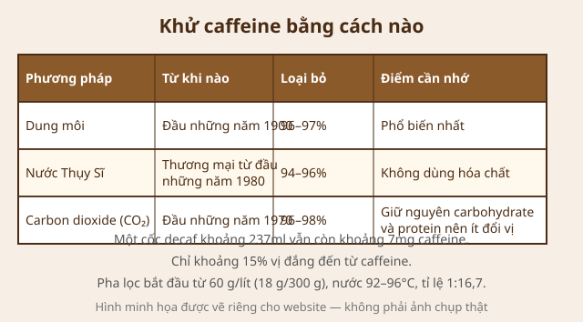

Cà phê decaf: đã khử caffeine thì vị ra sao, pha thế nào
Tác giả: Nguyễn Trung Đức
Nhiều người thích mùi và vị cà phê nhưng không uống được cà phê thường vào buổi tối, hoặc chỉ đơn giản muốn uống thêm một ly nữa trong ngày mà không nạp thêm caffeine. Cà phê decaf — cà phê đã khử caffeine — ra đời cho nhu cầu đó. Nhưng decaf không phải là cà phê "không có caffeine", và hạt decaf cũng không cư xử giống hệt hạt cà phê thường khi rang và khi pha. Hiểu được hai điểm đó, bạn sẽ chọn được gói decaf đúng ý và pha được ly decaf ngon hơn hẳn.
Bài này viết về cà phê decaf: caffeine được lấy ra khỏi hạt bằng cách nào, còn lại bao nhiêu, vị thay đổi ra sao, cách đọc nhãn khi mua, và cách pha decaf cho từng dụng cụ. Bài chỉ nói về quy trình và cách pha, không đưa ra lời khuyên sức khỏe cho từng người. Bài này không nhắc lại phần so sánh hàm lượng caffeine giữa Robusta và Arabica trong Robusta hay Arabica: chọn theo khẩu vị, không chọn theo tên gọi, mà tập trung vào quá trình khử caffeine và cách pha hạt đã khử.
Decaf không phải là không có caffeine
Điểm đầu tiên cần nói rõ: decaf là cà phê đã khử phần lớn caffeine, không phải cà phê không có caffeine. Theo bài giải thích của giáo sư hóa học Michael W. Crowder trên phys.org (đăng lại từ The Conversation, tháng 7/2024), ngay cả phương pháp khử caffeine tốt nhất cũng không loại bỏ hết caffeine — một cốc decaf khoảng 8 oz (gần 237 ml) thường vẫn còn khoảng 7 mg caffeine. Trang hướng dẫn pha decaf KnowSips cũng viết rõ: decaf chứa ít caffeine chứ không phải không chứa, và lượng còn lại thay đổi theo hạt, quy trình khử, liều lượng và cỡ ly. Vì vậy, pha loãng hơn không phải là cách chắc chắn để có một ly "không caffeine".
Con số 7 mg này chỉ có ý nghĩa khi đặt cạnh cà phê thường, nhưng bài này không đưa ra con số so sánh tuyệt đối cho cà phê thường, vì hàm lượng caffeine trong cà phê thường thay đổi rất nhiều theo giống, cách rang và cách pha. Điều cần nhớ chỉ là: nếu bạn cần tránh caffeine hoàn toàn vì lý do riêng, hãy hỏi ý kiến người có chuyên môn thay vì coi decaf là lựa chọn không caffeine.
Caffeine được lấy ra khỏi hạt bằng cách nào
Tất cả các phương pháp khử caffeine đều bắt đầu từ hạt cà phê xanh, tức hạt chưa rang, đã được làm ẩm trước. Dùng hạt đã rang để khử caffeine sẽ cho ra cà phê có hương vị rất khác, vì các bước khử sẽ lấy đi một số hợp chất hương vị tạo ra trong quá trình rang. Hiện nay gần như mọi nhà sản xuất đều dùng một trong ba phương pháp chính dưới đây.

Bảng ba cách khử caffeine: dung môi, nước Thụy Sĩ, CO₂.
Phương pháp dung môi
Đây là cách truyền thống và phổ biến nhất, làm lần đầu từ đầu những năm 1900. Hai dung môi thường dùng là ethyl acetate và methylene chloride. Có hai cách làm. Cách trực tiếp: hạt xanh được hấp cho nở ra, rồi rửa nhiều lần bằng dung môi, dung môi bám vào caffeine và kéo nó ra khỏi hạt; sau khoảng 10 giờ ngâm, hạt được lấy ra và sấy khô. Cách gián tiếp: hạt được ngâm trong nước nóng vài giờ, rồi vớt hạt ra; nước ngâm — lúc này đã chứa caffeine và một phần hợp chất hương vị — được xử lý bằng dung môi để tách caffeine ra; sau đó nước này, vẫn còn hương vị, được đưa trở lại hạt để hạt hấp thụ lại phần hương đã mất. Trong cách gián tiếp, dung môi không chạm trực tiếp vào hạt.
Cả hai cách dùng dung môi loại bỏ khoảng 96–97% caffeine, theo phys.org. Về dư lượng dung môi, bài này ghi rõ: ethyl acetate có sẵn trong nhiều thực phẩm và đồ uống, được Cục Quản lý Thực phẩm và Dược phẩm Hoa Kỳ (FDA) coi là an toàn để khử caffeine. Methylene chloride thì FDA và Cơ quan An toàn Lao động Hoa Kỳ (OSHA) coi là không an toàn khi tiêu thụ ở nồng độ trên 10 mg cho mỗi kg trọng lượng cơ thể; tuy nhiên lượng methylene chloride còn lại trong hạt cà phê rang chỉ khoảng 2–3 mg/kg, thấp hơn nhiều so với giới hạn đó. Sau khi khử bằng methylene chloride, hạt được hấp và sấy, rồi rang ở nhiệt độ cao; trong quá trình hấp và rang, methylene chloride còn lại bay hơi. Khi pha, nước pha ở 190–212°F (khoảng 88–100°C) cũng là một cơ hội nữa để dung môi còn lại bay hơi. Bài này chỉ ghi lại các con số và quy trình như nguồn viết, không kết luận về độ an toàn cho từng người.
Phương pháp nước Thụy Sĩ (Swiss Water)
Phương pháp Swiss Water bắt đầu được dùng thương mại từ đầu những năm 1980, và chỉ dùng nước nóng cùng bộ lọc than hoạt tính, không dùng hóa chất. Quy trình: ngâm một mẻ hạt xanh trong nước nóng, nước nóng kéo cả caffeine lẫn các hợp chất khác ra khỏi hạt. Hạt được vớt ra, đặt vào nước sạch không caffeine, quá trình lặp lại — nhà sản xuất lặp lại tới 10 lần cho tới khi gần như hết caffeine. Nước ngâm lúc này chứa caffeine và các hợp chất hương vị đã hòa tan, được đưa qua bộ lọc than hoạt tính để giữ lại caffeine và các phân tử có kích thước tương tự, trong khi phần lớn các hợp chất hương vị khác vẫn ở lại trong nước. Nước đã lọc — giàu hương vị nhưng gần như không còn caffeine — được dùng để ngâm mẻ hạt mới, để các hợp chất hương vị đã mất trong bước ngâm đầu quay trở lại hạt.
Phương pháp này loại bỏ khoảng 94–96% caffeine, theo phys.org, và được đánh giá cao vì cách làm không dùng hóa chất và giữ được phần lớn hương vị tự nhiên của cà phê. Britannica cũng viết rằng đây là phương pháp chính để khử caffeine cho cà phê hữu cơ, vì không dùng tác nhân hóa học mà vẫn giữ được nhiều thành phần hương vị. Lưu ý: con số 94–96% là của phys.org, và bài này chỉ dùng con số đã đọc được trực tiếp trong nguồn đã mở.
Phương pháp carbon dioxide (CO₂)
Phương pháp CO₂ ra đời đầu những năm 1970, là cách hiện đại nhất trong ba phương pháp. Nhà sản xuất dùng CO₂ ở áp suất cao để chiết caffeine từ hạt đã làm ẩm: bơm CO₂ vào bình kín chứa hạt, caffeine hòa tan vào CO₂. Sau đó hỗn hợp CO₂ chứa caffeine được tách ra, đưa qua nước hoặc qua lớp than hoạt tính để lọc caffeine ra; CO₂ còn lại được thu hồi và dùng lại. Phương pháp này loại bỏ khoảng 96–98% caffeine, theo phys.org, và chỉ để lại rất ít dư lượng CO₂.
Britannica giải thích thêm vì sao phương pháp này ít làm thay đổi vị: CO₂ siêu tới hạn — ở trạng thái vừa như khí vừa như lỏng — len vào các khe của hạt như khí nhưng hòa tan caffeine như chất lỏng, và vì nó giữ nguyên carbohydrate và protein trong hạt nên vị thay đổi ít hơn. Nhược điểm chính là chi phí: phương pháp này cần thiết bị đắt tiền để tạo và xử lý CO₂, nên được dùng nhiều cho cà phê thương mại, cà phê siêu thị, theo phys.org.
Bảng dưới đây tự tổng hợp từ phys.org và Britannica.
| Phương pháp | Từ khi nào | Cách làm ngắn gọn | Loại bỏ caffeine | Điểm cần nhớ |
|---|---|---|---|---|
| Dung môi (ethyl acetate, methylene chloride) | Đầu những năm 1900 | Ngâm hạt xanh trong dung môi (trực tiếp) hoặc xử lý nước ngâm bằng dung môi (gián tiếp) | Khoảng 96–97% | Phổ biến nhất; dư lượng dung môi bay hơi khi rang và pha |
| Nước Thụy Sĩ (Swiss Water) | Thương mại từ đầu những năm 1980 | Ngâm hạt trong nước nóng nhiều lần, lọc caffeine bằng than hoạt tính, dùng lại nước giàu hương vị | Khoảng 94–96% | Không dùng hóa chất; phương pháp chính cho cà phê hữu cơ |
| Carbon dioxide (CO₂) | Đầu những năm 1970 | CO₂ áp suất cao hòa tan caffeine, lọc qua than hoạt tính, thu hồi CO₂ | Khoảng 96–98% | Giữ nguyên carbohydrate và protein nên ít đổi vị; thiết bị đắt tiền |
Điểm chung của cả ba phương pháp: không thể chỉ hòa tan caffeine mà không hòa tan thêm hợp chất khác trong hạt. Phys.org viết rõ rằng việc khử caffeine chắc chắn lấy đi một phần hợp chất tạo hương thơm và hương vị của ly cà phê, và các phương pháp như Swiss Water hay phương pháp dung môi gián tiếp có bước đưa một phần hợp chất trở lại hạt, nhưng có lẽ không trả lại được tất cả. Đó là lý do decaf thường được mô tả là "êm hơn" bản thường cùng loại — không phải vì mất caffeine làm mất vị đắng, mà vì một phần hợp chất hương đã đi theo caffeine.
Một hiểu lầm cần sửa: loại bỏ caffeine không loại bỏ phần lớn vị đắng. Giáo sư hóa học thực phẩm Thomas Hofmann (Đại học Kỹ thuật Munich) ước tính chỉ khoảng 15% vị đắng cảm nhận được trong cà phê đến từ caffeine, phần còn lại đến từ các hợp chất tạo ra trong quá trình rang. Vì vậy đừng kỳ vọng decaf sẽ hết đắng; nếu ly decaf của bạn đắng gắt thì nguyên nhân thường nằm ở cách rang hoặc cách pha, không phải ở caffeine.
Vì sao decaf rang và xay khác hạt thường
Decaf khó rang hơn hạt thường — Britannica chỉ viết đúng một câu về rang: hạt decaf khó rang đúng cách một cách tai tiếng ("notoriously difficult to roast properly"). Các chi tiết cụ thể về hạt decaf khi rang lấy theo hướng dẫn rang của Swiss Water mà trang Sweeter Grind dẫn lại: hạt nhẹ hơn và kém đặc hơn, và màu hạt sẫm hơn ngay từ khi còn xanh. Người rang vì vậy không thể tin vào màu hạt như khi rang cà phê thường: hạt decaf "bắt đầu với màu xanh sẫm hơn, giữ màu sẫm hơn trong suốt quá trình rang", nên người rang phải nhìn qua màu hạt rang. Với người mua, điều này có nghĩa là đừng chọn gói decaf theo độ sẫm màu của hạt; hãy chọn theo mùi thơm và ngày rang ghi trên bao bì.
Khi xay, hạt decaf giòn và xốp hơn nên vỡ vụn nhiều hơn ở cùng một mức chỉnh của máy xay, tạo ra nhiều hạt mịn. Sweeter Grind gợi ý chỉnh cối thô hơn 2–3 nấc so với mức pha hạt thường để bù lượng hạt mịn này. Hạt mịn làm nước chảy chậm lại trong phễu lọc, dễ gây đắng và đục vị. Đây là điểm quan trọng nhất khi pha decaf tại nhà, và là lý do KnowSips khuyên bạn coi decaf như một loại cà phê mới hoàn toàn: giữ nguyên liều lượng và tỉ lệ đã biết, rồi chỉnh độ xay theo tốc độ chảy và vị của ly, thay vì copy nguyên mức xay của hạt thường.
Cách pha decaf: điểm khởi đầu và cách chỉnh
KnowSips đưa ra điểm khởi đầu đáng tin cho pha lọc: 60 g cà phê cho mỗi lít nước, tức 18 g cà phê cho 300 g nước một cốc, nước 92–96°C, độ xay vừa (medium), nếm sau khi ly nguội bớt một phút rồi mới chỉnh. Tỉ lệ này tương đương 1 phần cà phê cho 16,7 phần nước. Dùng cùng một tỉ lệ cho hai lần pha đầu, rồi mới chỉnh một biến duy nhất mỗi lần: nếu ly nhạt nhưng gắt thì xay mịn hơn một chút; nếu ly khô, đắng và chảy chậm thì xay thô hơn một chút. Đừng đổi đồng thời tỉ lệ, độ xay, nhiệt độ và thời gian, vì như vậy bạn không biết thay đổi nào đã có tác dụng.
Bảng dưới đây dịch từ bảng của KnowSips (giữ nguyên khung 5 hàng, 3 cột), cho từng dụng cụ pha.
| Dụng cụ | Bắt đầu từ đâu | Nhìn vào đâu trước | Chỉnh gì trước |
|---|---|---|---|
| Phễu lọc giấy | 60 g/lít | Nước thấm đều khắp mặt bột, không để lại vùng bột khô | Vặn cối xay sang một nấc nhỏ rồi pha lại |
| Máy pha tự động | Lượng cà phê và nước như máy vẫn dùng | Nước từ vòi phun phủ kín mặt bột | Gạt phẳng mặt bột trước khi pha, làm sạch lỗ phun nếu nước chảy lệch |
| French press | 60–65 g/lít | Cặn lắng và vị khô đọng ở cuối ly | Xay thô thêm một nấc, pha xong rót hết ra ly ngay |
| AeroPress | Lượng cà phê và nước đã đong sẵn cho một lần pha ngắn | Độ nặng nhẹ khi ấn piston | Nếu ấn thấy nặng tay thì xay thô thêm |
| Espresso | Lượng cà phê cho giỏ lọc như bạn vẫn dùng | Shot chảy nhanh hay chậm, vị đã đủ hay chưa | Coi như pha một loại hạt mới, chỉnh lại từ đầu |
Một số điểm thực hành khác từ KnowSips: hạt mịn của decaf có thể trôi xuống đáy và làm nước chảy chậm, nhất là sau khi khuấy mạnh hoặc xoáy nhiều lần — nếu nước ứ lại trên mặt bột bùn, hãy xay thô hơn trước khi giảm liều lượng. Với French press, vì hạt mịn không cản nước nhiều như phễu lọc, nên French press hợp với hạt decaf giòn, nhưng cần ấn nhẹ và rót hết ra ngay sau khi pha xong, vì để cà phê nằm dưới lưới lọc sẽ tiếp tục chiết và làm các ly sau ngày càng gắt. Với espresso, cần chỉnh lại hoàn toàn dù gói decaf và gói thường cùng nhãn rang: hạt mịn nhiều hơn có thể làm shot chảy chậm, trong khi hạt giòn làm lực nén thay đổi sau mỗi lần chỉnh nhỏ.
Về nhiệt độ, KnowSips ghi nước 92–96°C cho pha lọc, và lưu ý nhiệt độ đi theo mức rang và vị chứ không đi theo nhãn decaf: decaf rang rất đậm có thể sạch vị hơn ở đầu thấp của khoảng nhiệt, decaf rang nhạt có thể cần nước nóng hơn hoặc thời gian tiếp xúc lâu hơn. Với phin Việt Nam, bạn có thể bắt đầu từ đúng công thức phin quen thuộc trong Pha cà phê phin: tỉ lệ 25g – 80ml và cách chỉnh cho đúng gu của bạn (25 g bột, 80 ml nước, ủ rồi châm), nhưng vì hạt decaf giòn và nhiều hạt mịn hơn, hãy để ý tốc độ nhỏ giọt: nếu phin chảy quá chậm và cà phê đắng, lần sau xay thô hơn một chút thay vì đổ thêm nước.
Về độ tươi, decaf cần được quan tâm hơn cà phê thường vì hai lý do: túi decaf thường nằm trên kệ lâu hơn túi cà phê thường, và hương của decaf vốn đã nhẹ hơn sau quá trình khử nên mùi ôi lộ ra sớm hơn. Hãy mua túi nhỏ, còn ngày rang, ngửi thử khi mở túi — decaf ôi thường có mùi gỗ hoặc mùi nhạt. Bảo quản như cà phê thường: đậy kín, tránh không khí, nhiệt, ánh sáng và ẩm; chỉ xay lượng cần dùng; tránh đưa hạt lạnh ra vào tủ đông ẩm, vì nước ngưng tụ trên hạt làm hỏng chất lượng trước khi cách pha kịp giúp gì.
Cách đọc nhãn khi mua decaf
Khi cầm một gói decaf, hãy đọc bốn thông tin sau theo thứ tự: tên phương pháp khử (Swiss Water, CO₂ hay dung môi), ngày rang, giống và vùng trồng, mức rang. Một túi ghi rõ phương pháp khử, có ngày rang và niêm phong nguyên vẹn cho bạn nhiều thông tin hữu ích hơn một túi chỉ hứa "đậm" mà không nói gì về cà phê bên trong. Nếu gói ghi "decaf" mà không ghi phương pháp, bạn vẫn uống được bình thường, chỉ là bạn không biết hạt đã qua xử lý nào.
Một lưu ý về nhãn: hãy phân biệt "decaf" với "caffeine-free" (không caffeine). Decaf là cà phê đã khử phần lớn caffeine nhưng vẫn còn một ít; "caffeine-free" là tuyên bố không có caffeine. Khi một con số caffeine được ghi trên bao bì, hãy đối chiếu với cỡ ly bạn thực sự rót, vì lượng caffeine trong ly phụ thuộc vào liều lượng và cách pha. Và nếu con số caffeine cụ thể quan trọng với bạn vì lý do riêng, hãy dùng con số nhà sản xuất đã kiểm nghiệm cho đúng sản phẩm đó, thay vì gán một con số chung cho mọi ly decaf.
Bảng chẩn đoán nhanh khi ly decaf chưa ngon
| Ly nếm thấy sao | Nhiều khả năng do | Thử chỉnh gì trước |
|---|---|---|
| Nhạt nhưng vị sạch, không gắt | Cà phê cho vào ít so với nước, nhưng chiết đã đều | Cho thêm một ít cà phê, hoặc bớt nước đi một chút |
| Gắt mà rỗng, thiếu vị giữa | Nước chưa kịp kéo đủ vị ra khỏi bột | Xay mịn thêm một chút, hoặc để cà phê tiếp xúc nước lâu hơn |
| Đắng, khô miệng | Nước đã kéo quá nhiều vị ra khỏi bột | Xay thô thêm, pha nhanh hơn, hoặc dùng nước mát hơn một chút với decaf rang đậm |
| Nước chảy chậm, ly đục | Hạt mịn lắng xuống làm nghẽn dòng chảy | Khuấy ít lại, xay thô thêm |
| Nhạt dù đã chỉnh đủ cách | Hạt đã cũ, bảo quản chưa tốt, hoặc nước có vấn đề | Xem lại ngày rang, hộp đựng và nước rồi hãy nghĩ tới chuyện mua dụng cụ mới |
Bảng này dịch từ bảng chẩn đoán của KnowSips. Nguyên tắc chung: nếm khi ly đã nguội bớt khỏi nhiệt độ bỏng, vì nóng có thể che vị ngọt và làm ly loãng có cảm giác mạnh hơn thực tế. Ghi lại hướng và mức chỉnh sau mỗi lần pha — "mịn hơn một nấc" hữu ích hơn "mịn hơn" chung chung — và so sánh các ly ở nhiệt độ tương đương, trong cùng một chiếc cốc sạch.
Kết luận
Cà phê decaf là cà phê đã khử phần lớn caffeine, không phải cà phê không có caffeine: một cốc khoảng 237 ml thường vẫn còn khoảng 7 mg caffeine. Ba phương pháp khử chính là dung môi (loại bỏ khoảng 96–97%), nước Thụy Sĩ (khoảng 94–96%, không dùng hóa chất, là phương pháp chính cho cà phê hữu cơ) và CO₂ (khoảng 96–98%, giữ nguyên carbohydrate và protein nên ít đổi vị). Cả ba đều làm trên hạt xanh chưa rang, và đều lấy đi một phần hợp chất hương cùng với caffeine, nên decaf thường êm hơn bản thường cùng loại. Hạt decaf giòn, xốp và nhiều hạt mịn hơn nên rang khó hơn và xay khác đi: đừng tin màu hạt, hãy chọn theo mùi thơm và ngày rang. Khi pha, bắt đầu từ 60 g cà phê mỗi lít nước (18 g cho 300 g nước), nước 92–96°C, độ xay vừa, rồi chỉ chỉnh một biến mỗi lần theo tốc độ chảy và vị của ly. Mua túi nhỏ còn ngày rang, đọc rõ phương pháp khử trên nhãn, và nhớ rằng decaf vẫn chứa một ít caffeine — nếu con số đó quan trọng với bạn, hãy dùng con số nhà sản xuất đã kiểm nghiệm cho đúng sản phẩm.
Nguồn tham khảo
- Michael W. Crowder (The Conversation, đăng lại trên phys.org), "Retaining flavor while removing caffeine — a chemist explains the chemistry behind decaf coffee" (23/7/2024) — một cốc decaf 8 oz thường còn khoảng 7 mg caffeine; phương pháp CO₂ đầu những năm 1970, loại bỏ 96–98%; Swiss Water thương mại từ đầu những năm 1980, loại bỏ 94–96%, lặp lại tới 10 lần; dung môi từ đầu những năm 1900, loại bỏ 96–97%, ngâm trực tiếp khoảng 10 giờ; methylene chloride còn lại 2–3 mg/kg so với giới hạn 10 mg/kg trọng lượng cơ thể; nước pha 190–212°F (truy cập 23/11/2026): https://phys.org/news/2024-07-retaining-flavor-caffeine-chemist-chemistry.pdf
- Britannica, "How Is Coffee Decaffeinated?" — khử caffeine trên hạt xanh; dung môi trực tiếp và gián tiếp; Swiss Water là phương pháp chính cho cà phê hữu cơ; CO₂ siêu tới hạn giữ nguyên carbohydrate và protein nên ít đổi vị; hạt decaf khó rang (truy cập 23/11/2026): https://www.britannica.com/story/how-is-coffee-decaffeinated
- KnowSips, "How to Make Decaf Coffee: Ratio, Grind, and Taste" — 60 g/lít, 18 g/300 g, 92–96°C, tỉ lệ 1:16,7, độ xay vừa; French press 60–65 g/lít; hạt decaf giòn, nhiều hạt mịn; decaf chứa ít caffeine chứ không phải không chứa; bảo quản kín, tránh đưa hạt lạnh ra vào tủ đông ẩm (truy cập 23/11/2026): https://knowsips.com/coffee/making-decaf/
- Sweeter Grind, "Why Decaf Tastes Different — and How to Brew It Better" (19/9/2026) — Thomas Hofmann (Đại học Kỹ thuật Munich) ước tính chỉ khoảng 15% vị đắng cảm nhận được trong cà phê đến từ caffeine; hạt decaf giòn, xay ra mịn hơn ở cùng một mức cối, nhiều hạt mịn; chỉnh cối thô hơn 2–3 nấc so với mức pha hạt thường; decaf cũ trên kệ lâu hơn là nguyên nhân thường gặp hơn là bản thân quá trình khử (truy cập 23/11/2026): https://sweetergrind.com/posts/why-decaf-tastes-different-and-how-to-brew-it